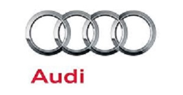

Audi Coupe

Audi один из крупнейших мировых автопроизводителей. С ней связано много новинок и достижений в области автомобилестороения. Вот некоторые факты о этой компании.
Забавный факт. Audi с латинского языка переводиться как: «слышать». В немецком языке этот же глагол horch. Основателем компании Audi является Аугуст Хорьх (August Horch).
Четыре кольца, знаменитый логотип Audi, появился в 1932 году. В этому году компания Horch и Audi объединилась с двумя другими немецкими производителями автомобилей, DKW и Wanderer, все 4 компании основали Auto Union. Четыре кольца, которые являются логотипом Audi по сей день, первоначально представляли четыре компании Auto Union. рецензии, отзывы, мнения, от владельцев Ауди.
После слияния Auto Union вышло на второе место по величине на автомобильном рынке Германии после Mercedes–Benz. Каждая из компаний были выделен сегмент рынка: Horch работал в классе люксовых автомобилей, Audi выпускал делюксовые модели, Wanderer занял сегмент – стандарт, а DKW занялся малолитражками и мотоциклами.
Система, на которой Audi создала свою современную корпоративную философию, происходит от скромного военного автомобиля Volkswagen Type 183, также называеый Iltis. В 1980 году этот джип выиграл Париж-Дакар.
Инженер Йорг Bensinger в Финляндии проводил испытания на проходимость нескольких автомобилей группы VW, один из которых был Iltis. Этот автомобиль, несмотря на гораздо более скромную мощность легко преодолевал все трудности. Идея Bensinger была воплощена в Audi 80 и в конечном счете стало системой Audi Quattro.
Audi стала первой компанией, производившей автомобили, с левосторонним расположением руля, в сентябре 1921 года Audi выпустила Type Audi K с этой опцией. В 1920 годах такое расположение стало стандартом.
Audi стала первой компанией, производившей краш-тесты. В 1938 году Audi выполнила несколько краш–тестов, чтобы выяснить, как автомобиль будет себя вести в случае аварии. Созданный прецедент существует и по сей день.
Из–за логотипа Audi на него подал в суд Международный олимпийский комитет в 1995 году. Логотип Audi имеет сильное сходство со знаменитым логотипом Олимпийских игр. Однако суд был проигран, а Audi сохранило свой логотип.
Audi первый, кто начал использовать светодиоды на своих автомобилях. Светодиодами был оснащен Audi A8 W12. В 2008 году в этой машине все функции, такие как дальний свет, ближний свет и даже поворотники были выполнены с помощью LED технологии.
Источник: https://earthz.ru/facts/Fakty-o-Audi